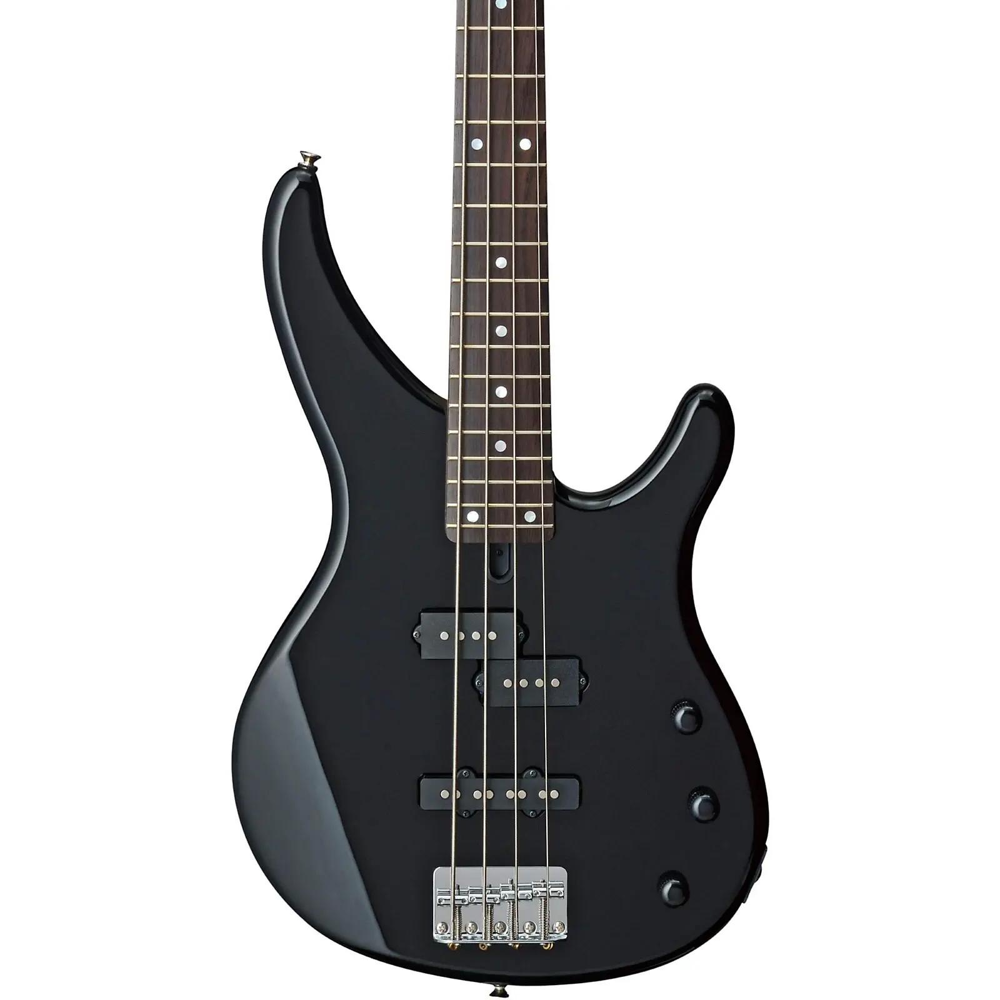
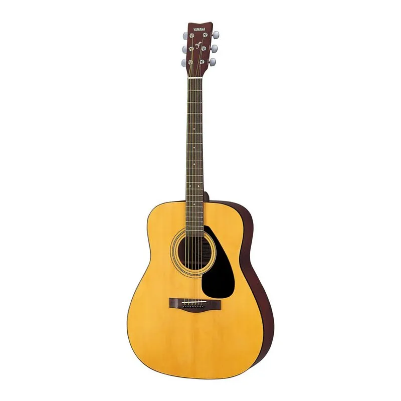
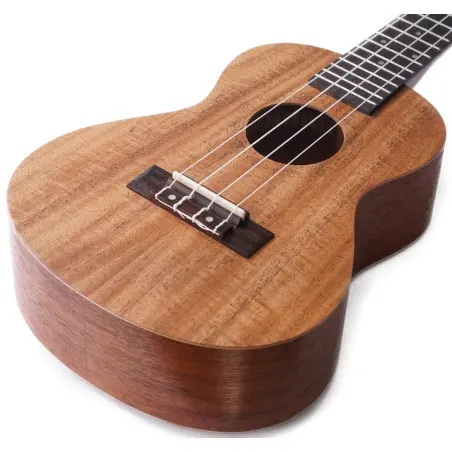
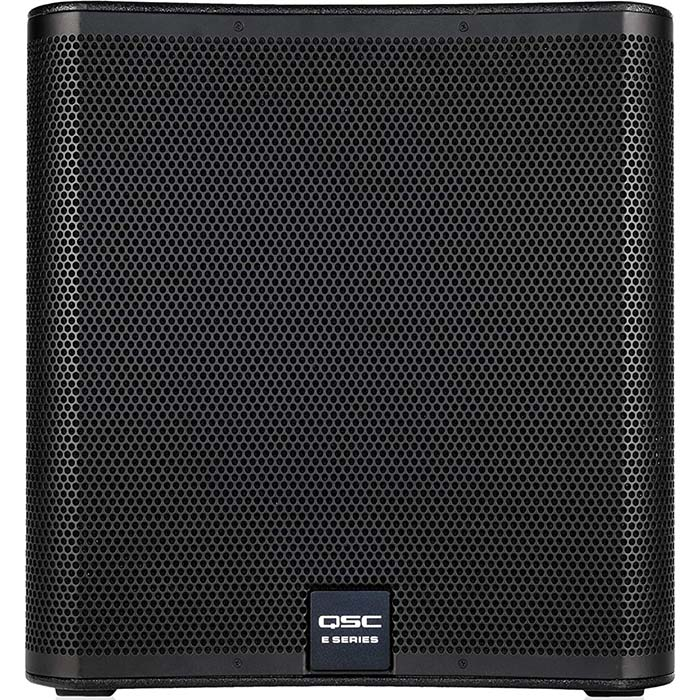
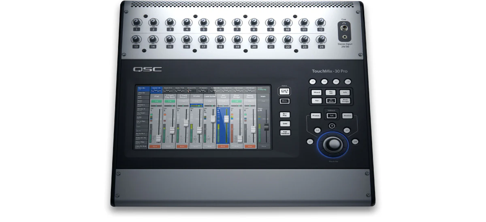
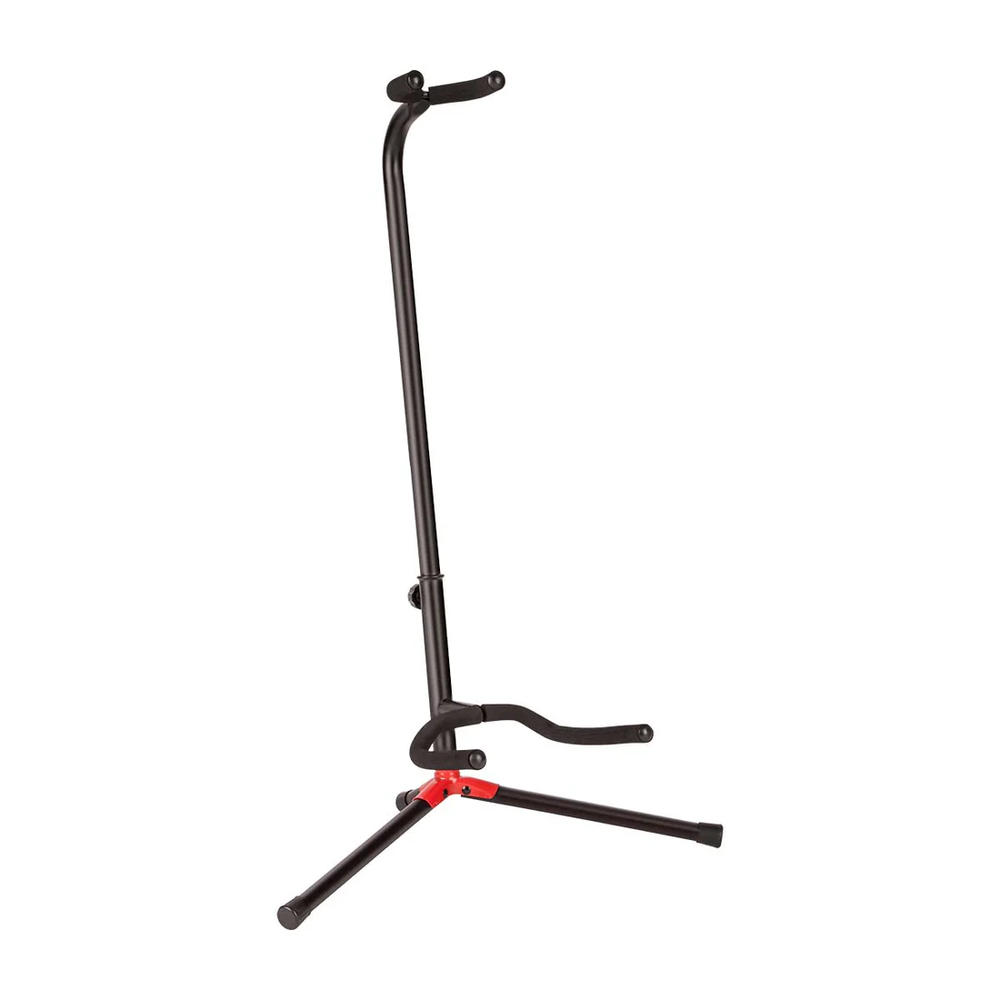

Bienvenidos a "The music store"
La mejor tienda de musica, ofrecemos todo tipo de servicios que necesiten nuestros usuarios, como compra, venta y reparacion de instrumentos, sonido profesional, accesorios musicales, servicios de proyectos audiovisuales, entre otros.
Ubicada en el corazón de la ciudad, "MusicSotre" es el destino ideal para todos los amantes de la música. Cada mes organizamos talleres y demostraciones, donde los clientes pueden probar los últimos lanzamientos y aprender de expertos de la industria. Ven y descubre un mundo de posibilidades en "MusicStore", donde la música cobra vida.
Productos
- BAJO ELÉCTRICO 4 CUERDAS TRBX174
- GUITARRA ACÚSTICA YAMAHA F310 NATURAL
- UKELELE GREKO MUK-23
- ALTAVOZ ACTIVO QSC K10.2
- SUBWOOFER QSC E118SW-BK PASIVO 18 PULGADAS
- ALTAVOZ FUENTE PUNTUAL D&B PASIVO E8 DE 8"
- MIXER QSC TOUCHMIX-30 32 CANALES
- CORREA ERNIE BALL PARA GUITARRA
- PICKS FENDER EN CELULOIDE MEDIOS 12 UND AZUL NACARADO.
- BASE AJUSTABLE PARA GUITARRA
Instrumentos
Bajo eléctrico de 4 cuerdas Cuerpo en caoba, mástil de arce y diapasón en sonokeling Posee un control general de tono y viene equipado con un micrófono single coil y uno split coil, cada uno con control de volumen.TRBX, un instrumento cuyas prestaciones están muy por encima de su precio.Fácil acceso a los trastes altos (agudos) gracias a la forma del bajo y su corte cómodo para la mano y para el cuerpo. Esta es la versión más asequible de la gama
Guitarra acústica para principiantes con gran respuesta. Tapa frontal de Abeto enchapado, Tapa trasera y lateral de Meranti, Mástil de Nato, Diapasón de Palo de Rosa, Puente de Palo de Rosa No cuenta con sistema de preamplificación. Clavijas cromadas Sencillas. Guitarra con escala ligeramente reducida para liberar tensión. Ideal para tocar música urbana o música anglo.
Ukulele de 23″ Material de la tapa: Caoba - Material de Diapasón: Palo de rosa - Material Aros y fondo: Caoba - Puente: Madera - Microfono activo con afinador
Sonido profesional
Altavoz amplificado con driver de 10″ y un SPL máximo de 130dB. Mejor desempeño de audio en su clase. Módulo de amplificación clase D de 2,000 watts. Ajuste Intrinsic Correction™ y gestión de altavoces.

El E118sw es un subwoofer de radiación directa de alto desempeño con un woofer individual de 800 W y 18 pulgadas en un marco de aluminio fundido. Está diseñado para producir un demoledor límite inferior en presentaciones en vivo, con el bombo y el bajo en el sistema de megafonía o para música bailable muy energética.
El E8 es un altavoz polivalente de 2 vías y alto rendimiento que utiliza un motor coaxial integrado. El E8 se puede utilizar para aplicaciones de discurso y música como sistema independiente de ancho de banda completo o incorporado en situaciones más grandes de refuerzo de sonido distribuido. Con la adición de un subwoofer E12X en modo pasivo o activo o de otro subwoofer de la Serie E

El TouchMix es sencillamente el mezclador más potente y compacto jamás creado. Ofrece las características, capacidades y calidad de sonido propios de los mezcladores de tamaño grande más reconocidos del mundo en un formato compacto y portátil, lo suficientemente pequeño como para llevarlo como equipaje de mano.
Accesorios
La correa de guitarra Polypro número uno del mundo en el patrón de California Weave con extremos de cuero bordados con correas de polipropileno duraderas pero cómodas. Longitud ajustable de 41 "a 72".
El celuloide es el principal material de selección. Las puntas de celuloide dan la sensación tradicional, con una superficie suave y llamativa y un tono musical cálido y redondo. A menudo llamada la elección de Fender®, la forma 351 es la selección más asociada con Fender.

Los soportes ajustables para guitarra Fender valen para acústica, guitarra eléctrica o bajo. El soporte para el mástil es ajustable en altura y acepta siempre diversos tamaños de instrumento, gira sobre un eje de soporte inferior para dar cabida a diversos estilos de cuerpo
Contacto
Para obtener más información sobre nuestros productos y servicios, no dudes en ponerte en contacto con nosotros:
Email: cguizado88@gmail.com
Teléfono: +57 3011234567